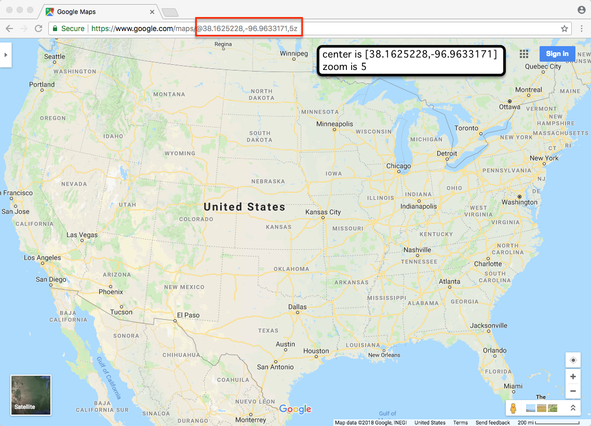

Lab 1. Basemaps & Zoom Level
Due: 11:59 pm, Wednesday, 9/9 | 50 points
Overview
Please read the instructions carefully (including the explanations of each step and the external links) and complete the assignment in the Deliverables section at the bottom.
In this lab, we will get started with Leaflet (https://leafletjs.com/), a popular open-source JavaScript library for making interactive maps.
Specifically, we will learn how to set up a map with appropriate geographic location and scale (e.g., zoom level) and then add tile layers as basemaps.
The four parts of a web map page. Every map you build in this course has the same four pieces. It helps to know their names before you start, because that is how you will describe a problem when something does not work.
<head>— links to the Leaflet style and code files. Nothing here is visible on the page.<div>— the empty container that holds the map. It needs an id and a height.<script>— the instructions that build the map inside that container.- tile layer — the images that make up the basemap, loaded from a server as you pan and zoom.
Preparation Steps
Since the maps will be displayed as a web page, we will first prepare the HTML document.
- Open your code editor (e.g., Notepad++ or Phoenix Code), copy and paste the following lines (in the box) in a new document to prepare your page.
Please also take a few minutes to go over the
html,head, andbodytags (https://www.w3schools.com/tags/default.asp) before continuing, or you may not fully understand the following steps.
Indentations of HTML tags do not affect how your page looks, but they help us better organize the document.
<!DOCTYPE html> <html> <head> <title>My map</title> </head> <body> </body> </html> - Save the document as
map1.htmlto your desired directory. This will create a blank web page. Note you will need to TYPE the file extension as .html to make it work. - Insert the following line inside the
headsection (between the start tag<head>and the end tag</head>), below the<title>line, to link to the Leaflet CSS file:<link rel="stylesheet" href="https://unpkg.com/leaflet@1.9.4/dist/leaflet.css" integrity="sha256-p4NxAoJBhIIN+hmNHrzRCf9tD/miZyoHS5obTRR9BMY=" crossorigin=""/> - Also link to the Leaflet JavaScript file in the
headsection. Make sure you put this AFTER Leaflet's CSS:<!-- Make sure you put this AFTER Leaflet's CSS --> <script src="https://unpkg.com/leaflet@1.9.4/dist/leaflet.js" integrity="sha256-20nQCchB9co0qIjJZRGuk2/Z9VM+kNiyxNV1lvTlZBo=" crossorigin=""></script>
Next, we will include the Leaflet CSS and JavaScript in the html document so that we could use Leaflet styles and functions for interactive mapping. Instead of downloading the .css and .js files, we will use hosted versions of Leaflet to access its latest release.
Your map1.html still looks blank at this point, because we have not created any content yet.
Initialize the map
Now we are ready to set up the map.
- Inside the
bodysection, include adivelement (code line below). The<div>tag (https://www.w3schools.com/tags/tag_div.asp) defines a division or a section in an HTML document. We use it to define a placeholder for adding the map later.
Note we also assigned the div an id (<div id="mymap" style="height: 800px"></div>'mymap') and defined its height (px stands for pixels).
Bothidandstyleare HTML attributes (see a complete list of HTML attributes at: https://www.w3schools.com/tags/ref_standardattributes.asp). You may want to bookmark this link for future reference. - Also in the
bodysection, include thescriptelement AFTER thedivelement:<script type="text/javascript"> </script>The
scriptsection here will contain detailed scripting statements for creating the map. Therefore, all code lines related to defining the map should be placed in thescriptsection, i.e., between the start and endscripttag. - Now, we will initialize the map using the
L.map()function of Leaflet. In this example, we will map the contiguous U.S.
Place the lines below in thescriptsection.- Again, indentations do not matter, but they help us stay organized.
- However, be very careful about the punctuation marks (e.g., brackets, comma, semicolon), which are important in JavaScript syntax. When you replace content later, make sure to NOT remove/change these from the sample.
- However, single and double quotes work the same.
These lines may look a bit tricky, so let us take a closer look:var map = L.map('mymap', { center: [38.1625228, -96.9633171], zoom: 5 });- Leaflet offers a wide range of functions related to interactive mapping. The
L.map(), for example, is used here to initialize a map on the'mymap'div (Recall that we assigned "mymap" as the id of the div where we want to put the map). - We also defined the
centerin the form of [latitude,longitude]. Here, we used[38.1625228, -96.9633171]as an approximate center of the contiguous US.
Note you may adjust the number of digits for the lat/lon, depending on the desired precision. - Leaflet also works with zoom levels for scale setup:
"Interactive, tiled maps are designed and rendered at a number of different scales. A zoom level is a predefined scale at which a map is rendered. OpenStreetMap, Google Maps, and most other online maps zoom levels are scaled such that the entire world fills a 256x256 pixel tile at zoom level 0, and doubles in width and height at each subsequent zoom level."
For example: at zoom level 6 you get a full view of a medium-sized country. At zoom level 11 you are looking at a metropolitan-region-sized area. At zoom level 16 you are down to a neighborhood scale (according to Mapbox). To read more, here is a short article (read here) - You probably have noticed the
var map =portion. Basically, we have assigned the initialized map to a variable (var) namedmap. This will be useful later when we need to add layers to this map.
- Now, you might be wondering if there is an easier way to figure out the center lat/lon and zoom level of a map. The answer is YES!
- Open Google Map in your web browser.
- Adjust the size of the browser window to roughly match the size of your map area (double-click map1.html to check).
- Zoom to the geographic area you are intended to map.
- When you are satisfied, look for the center lat/lon and zoom level from the address bar (see image below).

Add Tile Layers
With Leaflet, we could add tile layers as basemaps. A tile layer is a set of web-accessible tiles that reside on a server. Access to the tile layer depends on an URL.
For example, when adding a tile layer using Leaflet, we must provide a URL in the following form
https://somedomain.com/blabla/{z}/{x}/{y}.png.
No worries if you don't quite understand the URL structure. We use publicly available tile layers and you could always acquire the URL from these sources, such as OpenStreetMap.
- Next, we will add the OpenStreetMap tile layer.
L.tileLayer()is used to load tile layers. Place the lines below in thescriptsection, AFTER theL.map()function.L.tileLayer('https://tile.openstreetmap.org/{z}/{x}/{y}.png', { attribution: '© <a href="https://www.openstreetmap.org/copyright">OpenStreetMap</a> contributors', maxZoom: 10, minZoom: 4 }).addTo(map);- In addition to the URL, the attribution text is required by the tile layer providers. You should be able to find official guidance from their website. Note the attribution text is surrounded by quotation marks.
- The maximum and minimum zoom levels of the layer are defined by
maxZoomandminZoom. Please note that a comma,is required to separate the statements.If you want to learn more about other available options to control your map display, please refer to the Leaflet reference.
addTo(map)adds the tile layers to the map we have initialized (mapis the variable name of the initialized map we have defined earlier).
If you have followed along, your map should look like below (No? Take a look at the sample code)
If your map does not appear
A blank page at this stage is normal, and it almost always comes from one of a few causes. Before you rewrite anything, open the browser console and read the error. In Chrome, Edge, or Firefox, press F12, or right-click the page and choose Inspect, then click the Console tab. An error message tells you the file, the line number, and what went wrong.
- Nothing at all on the page. Check that the
divhas a height. A div with no height is invisible even when the map loads correctly. - The console says something is not defined. The Leaflet script line is missing, is misspelled, or comes after your own script instead of before it.
- A gray box with no tiles. The tile layer URL has a typo, or
addTo(map)is missing. - An unexpected token error. A bracket, comma, or quotation mark is missing. The line number in the console points near the problem, though the real cause is often one line above.
Reading the console is a skill worth building now. We will practice it together in class on August 31.
Deliverables
- Save the html file as
basemap.html. Modify the code to use a different tile layer. See the list below, or browse more options at the tile layer preview site. Be sure to add your layer to the map (addTo(map)). - Then, change the location and/or zoom level to show another place/scale, e.g., a landmark, a city, another country, a continent, the world...
Choosing a tile layer, and what an API key is
Some providers serve tiles to anyone. Others ask you to create a free account and then give you an API key, sometimes called a token or access token, which identifies your application. Both kinds are legitimate. Keys exist because serving map tiles costs money, and providers use them to manage load.
You can tell which kind you are looking at by reading the URL. If it contains a placeholder such as {apikey} or {accessToken}, or if it ends with something like ?key=, then you need to register before it will work.
This matters because a missing key fails quietly. You will not see an error on the map itself. You will just get a blank or gray page, and the reason will only be visible in the browser console.
For this lab, use a provider that needs no key. Any of the five below works by pasting the URL into L.tileLayer().
- CARTO Positron — a clean, pale gray basemap. The usual choice when you plan to put data layers on top, which is what we do starting in Lab 3.
https://a.basemaps.cartocdn.com/light_all/{z}/{x}/{y}.png - CARTO Dark Matter — the dark counterpart to Positron. Bright colors stand out well against it.
https://a.basemaps.cartocdn.com/dark_all/{z}/{x}/{y}.png - OpenTopoMap — contour lines and hillshading. Good for terrain and anything in the mountains.
https://a.tile.opentopomap.org/{z}/{x}/{y}.png - OpenStreetMap Humanitarian — higher contrast than standard OpenStreetMap, designed for field work.
https://tile-a.openstreetmap.fr/hot/{z}/{x}/{y}.png - Esri World Imagery — satellite imagery. Note the reversed order and the missing file extension.
https://server.arcgisonline.com/ArcGIS/rest/services/World_Imagery/MapServer/tile/{z}/{y}/{x}
Watch out. Most tile URLs end in {z}/{x}/{y}.png, but the Esri one is {z}/{y}/{x} with no .png. If you retype it from memory instead of copying it, you will get a gray map. Copy tile URLs exactly.
Attribution. Every provider requires its own attribution text, and the OpenStreetMap line above will not be correct for a different provider. Copy the matching attribution from the provider or from the preview site, and keep it in your L.tileLayer() options.
How to submit
You will host your web page and submit the url. There are many options for you to host a website. In this class, we will introduce the GitHub way.
Why GitHub? It is like Facebook for programmers. It is also a version control system which better supports editing and collaborative work. It also becomes a portfolio you can show to an employer.
Click HERE to read how to host your web map on GitHub. We will go over the process in class on August 31. Feel free to use other options to host your page, if you prefer.
Submit the url through D2L by 11:59 pm, Wednesday, 9/9.